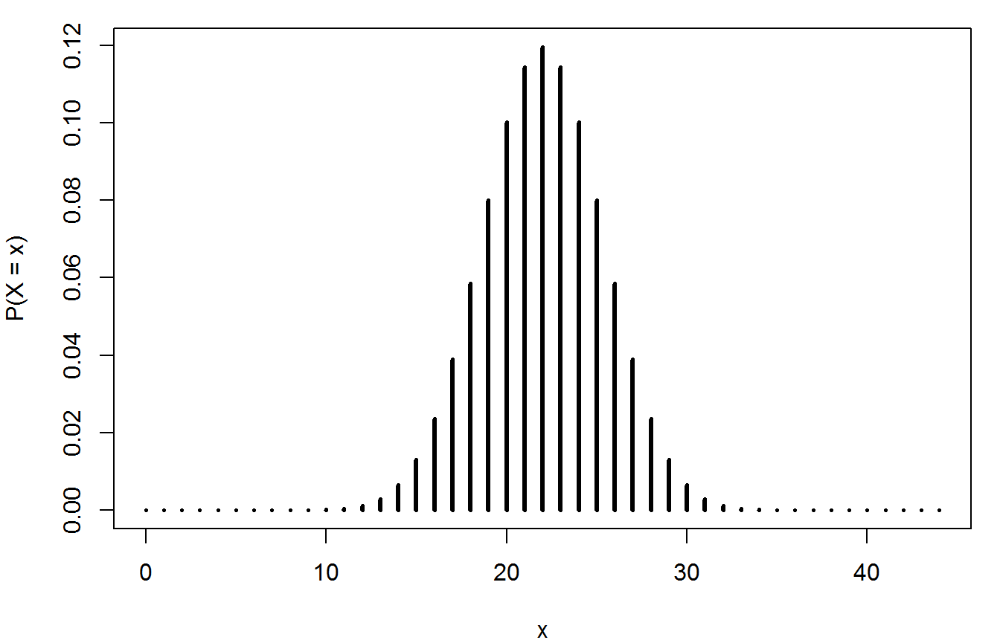

Chapter 5: binomial, geometric and Poisson distributions
Paul Northrop
2019-11-10
Source:vignettes/stat1004-ch5a-discrete-random-variables-vignette.Rmd
stat1004-ch5a-discrete-random-variables-vignette.RmdThe purposes of this vignette are to direct you to R functions and relating to the discrete probability distributions condsidered in Chapter 5 of the STAT0002 notes and to provide code to do some of the things that appear in the lecture slides.
First, we do this using the standard R functions (in the stats package). Then we repeat some of the calculations using the the distributions3 package, which provides a neat way to work with random variables in R.
We illustrate these functions using the Australian birth times data, which are available in the data frame aussie_births.
> library(stat1004)
> head(aussie_births)
time sex weight
1 5 girl 3837
2 64 girl 3334
3 78 boy 3554
4 115 boy 3838
5 177 boy 3625
6 245 girl 2208The stats package contains functions to evaluate the probability mass function (p.m.f.), cumulative distribution function (c.d.f.) and quantile function (which could also be called the inverse c.d.f.) of many discrete probability distributions, including the binomial, geometric and Poisson. It also contains functions to simulate random variates from these distributions. For a general description of these functions use ?Distributions. These functions are named in the following way, where xxx is the name (perhaps abbreviated) of the distribution in question: dxxx (p.m.f), pxxx (c.d.f), qxxx (quantile function) and rxxx (random variate generation).
The binomial distribution
Following the STAT0002 notes let us suppose that (before we observe the data) the number \(Y\) of boy babies is a random variable with a binomial distribution(44, \(p\)) distribution, where \(p\) is the probability that a randomly chosen birth produces a boy. We use the data to estimate \(p\).
> boys <- sum(aussie_births[, "sex"] == "boy")
> girls <- sum(aussie_births[, "sex"] == "girl")
> p_hat <- boys / (boys + girls)
> p_hat
[1] 0.5909091The function dbinom evaluates the p.m.f. of a binomial distribution. See ?Binomial for information about this function and pbinom, qbinom and rbinom.
The following code produces a plot like the ones we looked at lectures.
> # Plot the binomial(44, 1/2) p.m.f.
> n <- 44
> plot(0:n, dbinom(0:n, size = n, prob = 1 / 2), type = "h",
+ ylab = "P(X = x)", xlab = "x")> #barplot(dbinom(0:44, 44, p_hat), names.arg = 0:44, width = 0.5, xlim = c(0, 44))
> #plot(0:44, dbinom(0:44, 44, p_hat), type = "h")For the purposes of illustrating how the functions pbinom, qbinom and rbinom let us suppose that \(p = 1/2\). If we wanted to calculate the probabilities \(P(Y < 10)\)
> pbinom
function (q, size, prob, lower.tail = TRUE, log.p = FALSE)
.Call(C_pbinom, q, size, prob, lower.tail, log.p)
<bytecode: 0x000000000cfddad0>
<environment: namespace:stats>- ?

The distributions3 package
In September 2019 the distributions3 package (Hayes and Moller-Trane 2019) was released. A neat feature of this package is that it enables us to create an R object that corresponds to a particular random variable. Then we are able easily to use some simple R functions to perform calculations with this random variable. The way that this works is perhaps more intuitive than the way in which we use functions like dbinom() above.
> library(distributions3)
Attaching package: 'distributions3'
The following objects are masked from 'package:stats':
Gamma, quantile
The following object is masked from 'package:grDevices':
pdf
> # Create on R object that is, effectively, a binomial(n, 1/2) random variable
> Y <- Binomial(n, 1 / 2)
> Y
Binomial distribution (size = 44, p = 0.5)> # Reproduce the plot.
> plot(0:n, pmf(Y, 0:n), type = "h", ylab = "P(X = x)", xlab = "x")
References
Hayes, A., and R. Moller-Trane. 2019. distributions3: Probability Distributions as S3 Objects. https://github.com/alexpghayes/distributions3.